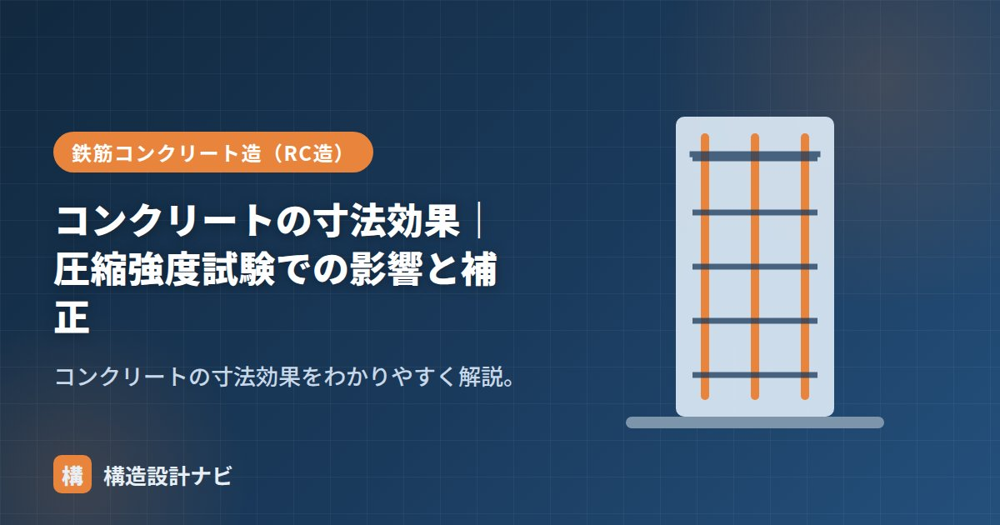

コンクリートの寸法効果｜圧縮強度試験での影響と補正

寸法効果（すんぽうこうか、size effect）とは、同じ配合・同じ材齢のコンクリートでも、供試体の寸法が大きいほど圧縮強度が小さく測定される傾向のことです。試験結果を正しく比較・解釈するうえで重要な考え方で、供試体の大きさを無視して強度を比べると、実際の品質を見誤ることがあります。
- 供試体が大きいほど内部欠陥を含む確率が上がり、強度が低めに出る
- φ100とφ150では試験結果に差が出るため単純比較はできない
- 実務では供試体寸法を統一し、規格に従って試験・判定するのが基本
寸法効果とは・理由
同じコンクリートでも、供試体が大きいほど内部に欠陥（空隙・微細なひび）を含む確率が高くなり、そこから壊れやすくなります。そのため大きい供試体ほど強度が低めに出ます。これが寸法効果です。破壊は材料内部の最も弱い箇所（弱点）から始まるため、体積が大きいほど弱点が含まれる確率が上がる、という考え方（弱鎖理論に近い発想）で説明されます。
あわせて、供試体の端面と載荷板との摩擦拘束の効き方も寸法によって変わるため、見かけの強度に影響することが知られています。寸法効果は単一の原因ではなく、内部欠陥の確率と拘束条件の両方が関係しています。
圧縮強度試験での影響
テストピースには φ100×200mm と φ150×300mm などがあり、寸法効果によりφ150のほうがφ100より強度がやや低めに出る傾向があります。粗骨材の最大寸法との相対的な比率も強度に影響するため、供試体寸法は粗骨材寸法とのバランスで選ばれています。試験結果を比較・評価するときは、この差を考慮する必要があります。
| 供試体寸法 | 強度の傾向 | 備考 |
|---|---|---|
| φ100×200mm | やや高めに出やすい | 最も一般的な寸法 |
| φ150×300mm | φ100よりやや低めに出やすい | 粗骨材が大きい場合に使用 |
補正の考え方
供試体の寸法が標準と異なる場合、寸法による補正係数を掛けて評価することがあります。実務では、同一工事・同一判定の中で使用する供試体寸法を統一し、規格（JIS）に定められた採取・作製・試験の手順に従って試験・判定するのが基本です。異なる寸法の結果を安易に読み替えることは避け、必要であれば係数の適用根拠を明確にします。
また、供試体は採取から養生・試験までの管理が結果に大きく影響します。運搬中の振動や乾燥、載荷面の不陸（へこみ・突起）なども見かけの強度を下げる要因になるため、寸法効果とあわせて、作製・養生の管理精度も試験結果の信頼性を左右する点に注意が必要です。
よくある質問
Q1. なぜ供試体が大きいほど強度が下がるのですか？
体積が大きいほど、内部の空隙や微細なひびといった弱点を含む確率が高くなり、その弱点から破壊が始まりやすくなるためです。統計的に「弱い部分に当たる確率」が増えるとイメージすると理解しやすくなります。
Q2. どちらの供試体寸法を使えばよいですか？
特記仕様や規格で指定された寸法を使うのが基本です。特に指定がなければ、粗骨材の最大寸法に応じてJISが定める組み合わせから選定し、同じ工事内では寸法を統一して判定の一貫性を保ちます。
φ100とφ150の供試体が同じ工事の試験成績表に混在していたのを見たことがある。寸法効果を知らずに数値だけ比較すると、配合には問題がないのに「強度が下がった」と誤解してしまうため、供試体寸法は結果を見る前に必ず確認する項目にしている。
「テストピース」「供試体」「圧縮強度と水セメント比」をどうぞ。
まとめ
- 寸法効果は、供試体が大きいほど圧縮強度が小さく出る現象。
- 大きいほど内部欠陥を含む確率が増えるのが主な理由。端面の拘束条件も関係する。
- φ100とφ150では結果に差が出るため単純比較は避ける。
- 寸法が違う場合は補正係数で評価。実務は供試体寸法を統一するのが基本。